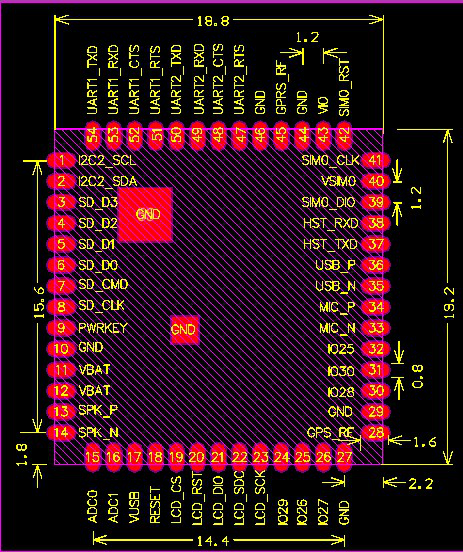

A9

特征：
- 32位内核，主频高达312MHz，4k指令缓存，4k数据缓存
- 多达29个GPIO（两个GPIO作为下载口）
- 实时时钟、闹钟
- 1个USB1.1接口
- 2个带流控的UART接口（+1个下载调试串口）
- 2个SPI接口
- 3个I2C接口
- 1个SDMMC控制器（接口）
- 2个10位ADC接口
- 32Mb(4MB) SPI NOR Flash
- 32Mb(4MB) DDR PSRAM
- 8kHz、13Bits/sample ADC mic
- 48kHz、16bits/sample DAC Audio
- 电源管理单元：锂电池充电管理、集成DC-DC及LDOs、可变化的IO电压
- 18.8 x 19.2 mm SMD封装
- 四频GSM/GPRS（800/900/1800/1900MHz)
- 语音通话
- 短信服务
硬件
- 规格书：A9规格书
- 用户手册：A9/A9G用户手册
- 硬件资料文件：A9/A9G硬件资料
模组引脚图(硬件资料文件中也包含)(A9和A9G模组引脚兼容)
